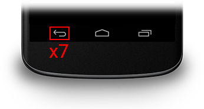
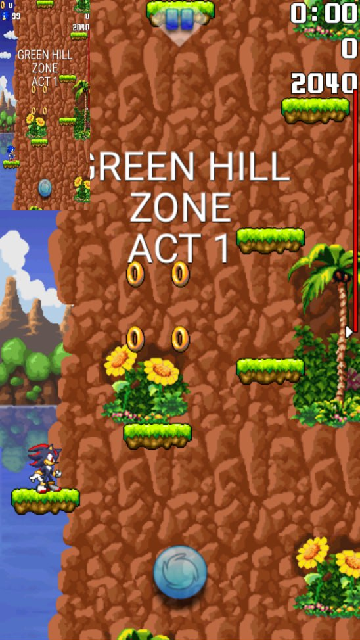

Sonic Jump Anniversary features a cheat code that serves different purposes. This page explains how to use the cheat code and what consequences it has.
To activate the cheat, all you have to do is press 7 times on the BACK button of the Android navigation bar.
DESCRIPTION:
Once the cheat activated, you can have access to every stage in the game!
If the Bonus Zone doesn't show up in the stage select menu, press the BACK button again to make it appear.
CHAOS EMERALD SHARDS:
Additionaly, Chaos Emerald shards can also be obtained depending on when you activated the cheat.

CLEARING STAGES INSTANTLY:
After activating the cheat, pressing the BACK button during a stage will make you clear the stage instantly.
Clearing a stage this way also makes you earn 50 rings, allowing you to earn an emerald shard, in case you haven't got one.
You can even use this cheat during Speedrun Mode to clear all stages quickly.
CHARACTER SELECT:
In the CHARACTER SELECT menu, you may notice a mysterious option between the selectable SONIC and SHADOW.
However, when the cheat is activated, a new playable character is available. This character is TAILS!

CONTROLLING TAILS:
Miles "Tails" Prower behaves just like Sonic, but he has the ability to perform a triple jump.
Performing extra jumps makes Tails fly by spinning his 2 tails.
WHY IS IT HIDDEN:
Miles "Tails" Prower is a character added by GdGohan during the idea of adding new playable characters in the game.
While Shadow the Hedgehog was added by Furrican, GdGohan wanted to add more characters.
The reason why Tails became a secret unlockable is due to the character sprite sheet having sprites limited by size. The sprite sheet was only designed for Sonic in mind. As the result, characters with physiques similar to Sonic only can normally being added in the game.
In fact, notice that the sprites of Tails aren't drawn properly. The available size of sprites must be bigger to fit Tails perfectly.
However, once there is a way to change the size and position values of sprite sheets, more playable characters will be introduced.
For more information, check out the Sprite Sheet Manipulation project.
DESCRIPTION:
The Multiplayer Mode is a game mode where 2 players are playing together for casual or competitive purposes.
One player is playing as Sonic, whereas the other player is playing as Shadow. In Multiplayer Mode, Shadow has the same physics as Sonic so both players has the same advantages.
HOW TO START MULTIPLAYER MODE:
The Multiplayer Mode functions via local connection. Make sure that both player's device are connected to the same Wi-fi.
After activating the cheat, select MULTIPLAYER in the Main Menu and a window appears.
Select your device IP to continue.
Next, the game asks if you want to be the receiver or the client.
If you want to be the client, select CLIENT and insert the other player's device IP.
If you want to be the receiver, select SERVER and wait for the other player to insert you device IP.
Finally, once done correctly, select a game mode and the other player's screen will appear on the top-left of your screen.
WHY IS IT HIDDEN:
The Multiplayer Mode was originally going to be one of the new features highlighted, but it was decided to make it hidden as a secret feature, due to the problematic structure of the multiplayer screens.
For more information, check out the Multiplayer Mode project.